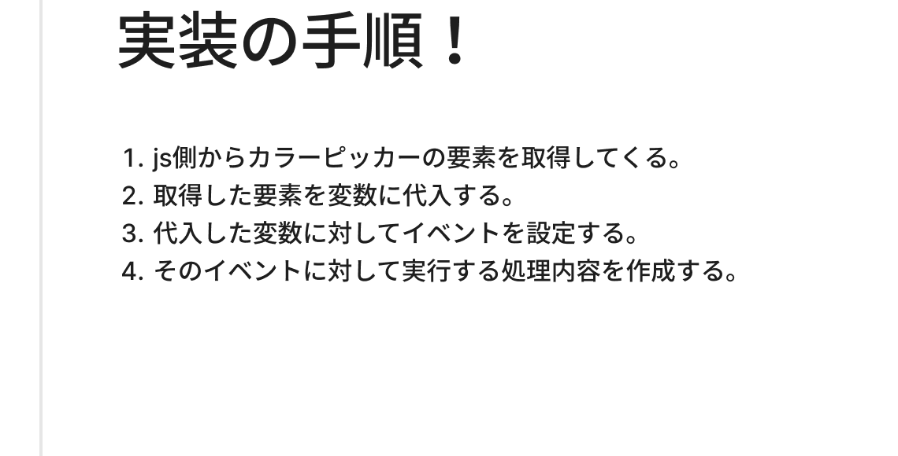
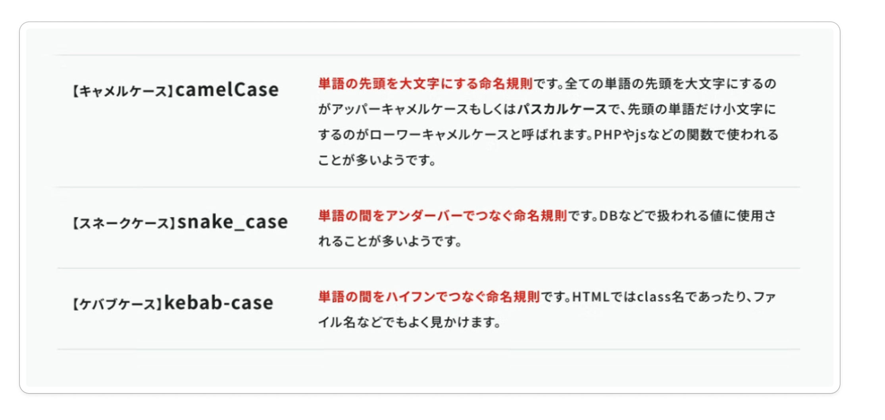
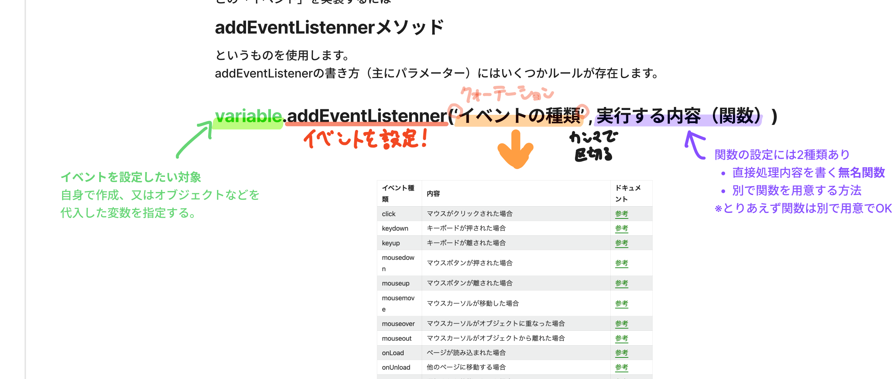
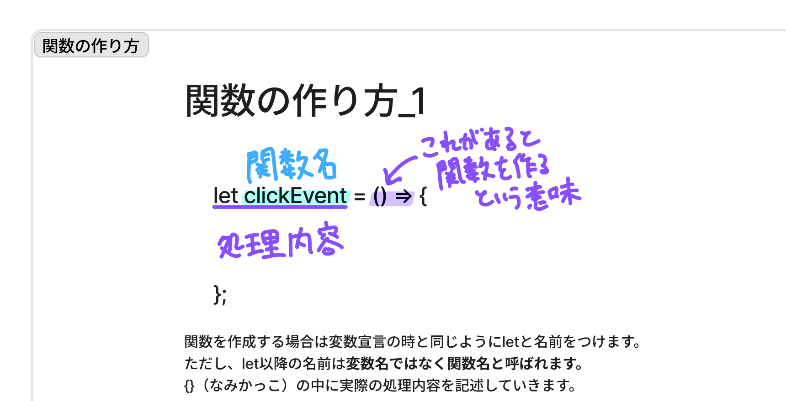

訓練校｜全5時間の集中授業

時刻をクリックすると詳しい解説に飛べます。★★★＝特に重要。全5時間（約4時間40分）。
取得→代入→イベント設定→処理作成。JSで動きを作るときの基本形（板書）。
document.querySelector('#id')。中身はCSSセレクター。Sは大文字。
同じタグが複数あると迷う。IDは重複しないので取得に最適。JS用にIDを振ることも。
inputの値は .value で取る。これはメソッドでなくプロパティ（情報）。
要素.textContent = '...' でテキストを上書き（=代入）。
文字列と変数をつなぐのは +（足し算ではない）。性質が違うものを連結。
JS=キャメル(colorPicker)／CSS=ケバブ(color-picker)／ファイル=スネーク(color_picker)。
要素.addEventListener('click', 関数)。これが使えればJSの大半はできると先生。
1単語は予約語と被るリスク。colorCodeのように2単語以上で。
要素.style.fontSize = '20px'。ハイフン付きはキャメルケースに。
今日いちばん大事なのが「どういう手順で動きを実装するか」。これを掴むのに時間がかかるが、JSで何か作るときは毎回この流れ（板書参照）。
今回作るのは「カラーピッカーを選ぶと、①背景色が同じ色に変わる ②16進数のカラーコードが表示される」という動き。ユーザーのアクション（色を選ぶ）に反応する＝JSの領域。
下準備のメモ JSの読み込みはCSSの読み込みの「次」に書くことが多い（リセットCSS→共通CSS→…→JS の順）。これはルールでなく「あるある」。
JSからHTMLをいじるには、まず対象の要素を取ってくる。使うのは document オブジェクト（HTMLの情報が入った箱）の querySelector メソッド。
// #colorpicker のついた要素を取得して変数に入れる let colorPicker = document.querySelector('#colorpicker');
querySelector の S は大文字（注意）<script> に defer をつけ忘れると、要素がまだ読み込まれる前にJSが走り、取得結果が null（=何もない）になる。先生も授業中にやらかした「あるあるミス」。JSファイルの読み込みには必ず defer。
要素そのものでなく、その中の「値」（カラーピッカーが持つ16進数カラーコード）が欲しいときは .value をつける。
colorPicker.value // → '#34c759' のようなカラーコード
. でつなげるのはメソッドだけではない。メソッド＝命令・指示（log、alert等）／プロパティ＝情報そのもの（value等）。.value はプロパティ。
オブジェクトデータは 「キー（項目）」と「値」のペアでできている。.value は「value というキー」を指定して、そこに入っている値を呼び出している、というイメージ。フォームで習った value属性 と同じもの。
画面の文字を書き換えるには、要素のテキスト部分を .textContent で指定して、新しい値を代入（=）する。
// PタグのテキストをJSから上書きする colorParagraph.textContent = 'カラーコード';
.textContent。
「カラーコード：#34c759」のように、文字列と変数をつなげて表示したいときは + を使う。
'カラーコード：' + colorCode // → 'カラーコード：#34c759'
+ でつなぐと連結できる。連結した結果は文字列に統一されがち（前回の '10'+'10'='1010' と同じ理屈）。
変数名・クラス名・ファイル名などの名前の付け方には種類（命名規則）がある。代表的な3つ。

| 名前 | 書き方 | 主な用途 |
|---|---|---|
| キャメルケース | colorPicker（2語目の頭を大文字） | JS・PHPの変数 |
| ケバブケース | color-picker（ハイフン区切り） | HTMLクラス名・CSS変数 |
| スネークケース | color_picker（アンダースコア区切り） | ファイル名など |
使い分けの目安：JSはキャメル／HTML・CSSはケバブ／それ以外はスネーク。命名がバラバラだと可読性が下がり、チームのルールがブレてバグの原因にもなる。
colorCode、colorPicker）。暗記するより、2語以上にする習慣で回避するのがラク。
イベント＝ユーザーのアクションに対して処理を実行すること。これを設定するのが addEventListener メソッド。
colorPicker.addEventListener('click', 関数名); // ① イベントの種類 ② 実行する関数

addEventListener('イベントの種類', 関数) の構文と、イベントの種類一覧
addEventListener がある程度使えるようになれば、JSのカリキュラムは十分。「この半年でやりたいことのほとんどはできるようになる」。難しいと感じてもここだけは押さえたい。
click（クリック）／mouseover（ホバー）／load（読み込み完了）／resize（リサイズ）／input（入力）など※今回のカラーピッカーは input イベントを使用（入力・選択の変化に反応）。
関数＝処理内容に名前をつけたもの。呼び出すと中の処理が実行される。ハリーポッターの呪文と同じ（「ファイア」で火が出る、その「火が出る」中身を自分で書く）。
// A. 別で関数を用意（今の書き方＝アロー関数） let changeColor = () => { // 実行する処理をここに書く }; colorPicker.addEventListener('input', changeColor);

{ 処理内容 }; letで宣言し、let以降の名前は変数名でなく関数名と呼ぶ。なみかっこの中に実際の処理内容を書く" style="width:100%; max-width:820px; display:block; margin:0 auto; border:1px solid var(--border); border-radius:10px; box-shadow:0 2px 8px rgba(0,0,0,.06);">let 関数名 = () => { 処理 };）。{}の中に処理を書く
※ function 関数名(){} という昔からの書き方もある。参考サイトで見かけたら「古い書き方」と思えばOK。授業では新しい () => {}（アロー関数）で進める。
DOM（Document Object Model）＝JSが理解するHTMLの形式。JSから見たHTMLの地図のようなもの。
document（ドキュメントオブジェクト）がある※今は触り程度でOK。「JSがHTMLを操作するための仕組みがある」と分かれば十分。本格的に学ぶときに掘り下げる。
JSから要素のCSS（見た目）を書き換えるには 要素.style.プロパティ = 値。
// 文字サイズを変える colorParagraph.style.fontSize = '20px'; // 背景色を、選んだカラーコードに変える container.style.backgroundColor = colorPicker.value;
font-size → fontSize／background-color → backgroundColor
'20px'）。数値だけなら不要style 属性での上書きは優先度が最強（!important以外のCSSには勝つ）inputイベント発火 → 関数が走り → 背景色が変わり・カラーコードが表示される。CSSだけでは作れない「動き」をJSで実現できた。
| 用語 | 意味 |
|---|---|
| document.querySelector() | HTMLから要素を取得するメソッド。中身はCSSセレクター |
| .value | input等の入力値を取得するプロパティ |
| .textContent | 要素のテキストを取得・書き換えるプロパティ |
| プロパティ | オブジェクトの中の「情報」（メソッド＝命令とは別物） |
| キー / 値 | オブジェクトの構造。キーで値を呼び出す |
| 文字列の連結 + | 文字列と変数などをつなぐ記号（足し算ではない） |
| 命名規則 | キャメル(JS)／ケバブ(CSS)／スネーク(ファイル) |
| 予約語 | JSで使い道が決まっている単語。変数名に使えない（全て1単語） |
| イベント | ユーザーのアクションに反応して処理を実行すること |
| addEventListener | イベントを設定するメソッド。(種類, 関数)の2つを渡す |
| イベントの種類 | click / mouseover / load / resize / input など |
| 関数 | 処理に名前をつけたもの。別で用意 / 無名関数の2種 |
| アロー関数 | () => {} という今の関数の書き方 |
| DOM / ノード | JSが理解するHTMLの形式 / その最小単位（要素・テキスト） |
| 要素.style.プロパティ | JSからCSSを書き換える。ハイフンはキャメルケースに |
querySelector・.value・.textContent・addEventListener・.style を一通り書いてみる最大のセキュリティは、コップを（パソコンから）遠ざけること。世界的に有名なエンジニアの名言です。── 朝の余談（飲み物こぼし対策）
このaddEventListenerが使いこなせるようになれば、JavaScriptのカリキュラムは十分。この半年でやりたいことのほとんどはできるようになります。── 今日いちばんの核
JSの授業では、AIをめっちゃ活用している人は逆に難しくなっちゃうと思うので、あんまり使わない方がおすすめかもしれないですね。── 学び方のアドバイス
難しいですね。今週も言いましたが、難しいですからね。（先生自身もdefer忘れでミスりながら）こういうちょっとしたミスでも気づかない時があるので、よう注意ですね。── JSの難しさと向き合う